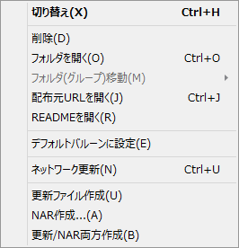
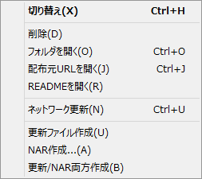

エクスプローラ：右クリック/機能メニュー
エクスプローラで選択したアイテムに対して右クリックするか、選択した状態で「機能」メニューを呼び出した時に表示されるメニューの解説です。
メニュー項目は以下の通りです。(デフォルトの項目は、左ダブルクリック時に実行されます。またエクスプローラ右下のボタンもおなじ効果です)
共通する項目
- 削除
- 指定項目のアンインストールを行います。
- フォルダを開く
- 指定項目の構成ファイルが収録されているフォルダをWindowsエクスプローラで開きます。
- フォルダ（グループ）移動[シェル以外]
- 指定項目が属する読み込みフォルダ（グループ）を移動します。
現在起動中の項目については実行できないので注意してください。
なおフォルダが１つのみの場合はこの項目は選択できません。 - 配布元URLを開く
- 指定項目を配布している場所を表示させます。
ただし、情報が見付からない場合は何もしません。 - READMEを開く
- 指定項目のreadmeを開きます。
ただし、readmeが見付からない場合は何もしません。 - ネットワーク更新
- ゴーストの場合は起動せずにネットワーク更新のみを実行します。
ゴースト以外の場合は、通常このメニューでネットワーク更新を実行します。 - 更新ファイルの作成
- ネットワーク更新のための、updates2.dauファイルを作成します。
- NAR作成
- 選択項目をネットワーク上で配布できるように、１つのファイルにまとめます。
- 更新/NAR両方作成
- 更新ファイル作成・NAR作成を一度に実行します。
ゴーストの項目

- 切り替え：デフォルト
- 現在のゴーストを他のものに切り替えます。
- ゴーストを呼ぶ
- 現在のゴーストはそのまま、あらたに別のゴーストを立たせます。
- 起動用ショートカットを作成する
- 選択したゴーストでSSPを起動するためのショートカットをデスクトップに作成します。
- デフォルトゴーストに設定
-
エラー終了時に再起動した際など、標準で起動するゴーストとして、現在選択中のゴーストを設定します。
なお設定されたゴーストのリスト左側のアイコンは【 】になります。
】になります。
- 喋り優先ゴーストに指定
-
喋るゴーストの指定のないSSTPなどで、優先して喋らせたいゴーストとして、現在選択中のゴーストを設定します。
なお設定されたゴーストのリスト左側のアイコンは【】になります。
※デフォルトゴーストと喋り優先ゴーストを兼ねる場合は【 】のような表示になる。
】のような表示になる。
- RSSの更新情報を使い一括更新
- 最新の更新情報を自動で取得し、更新があるキャラクターを自動的に一括更新します。
バルーンの項目
- 切り替え：デフォルト
- 現在のバルーンを、他のものに切り替えます。
- デフォルトバルーンに設定
-
ゴースト側で使用するバルーンが指定されていない場合（あるいは指定されたバルーンがない場合）に標準で使うバルーンを設定します。
なお設定されたバルーンのリスト左側のアイコンは【】になります。
シェルの項目
- 切り替え：デフォルト
- 現在のシェルを、他のものに切り替えます。
ヘッドラインの項目

プラグインの項目

- 設定/実行：デフォルト
- プラグインの設定あるいは実行を行います。実際に何をするかは、プラグイン毎に異なります。
- 有効/無効
- プラグインの有効/無効を切り替えます。
無効にすると、プラグイン自体は認識されていますが、読み込まれていない状態になります。